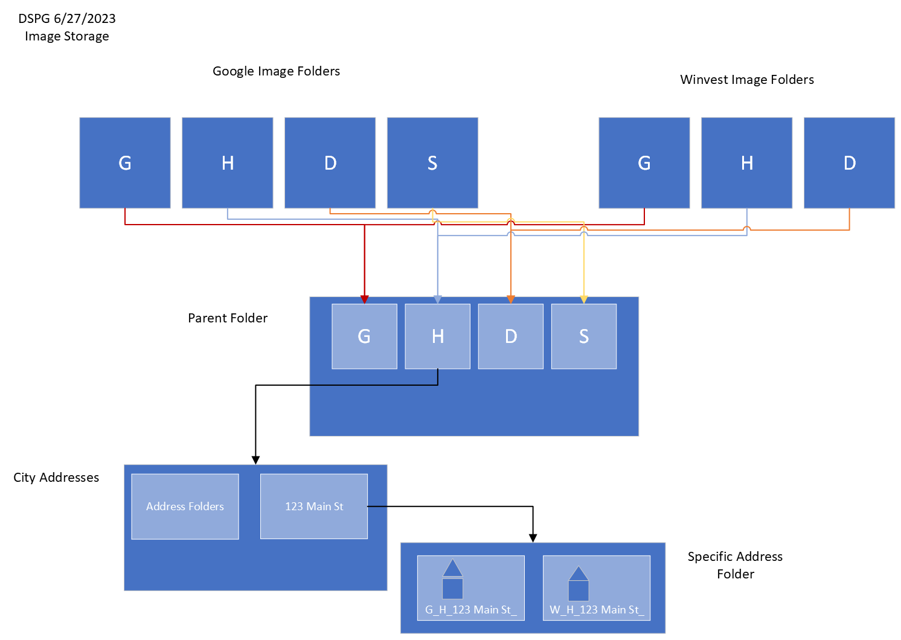
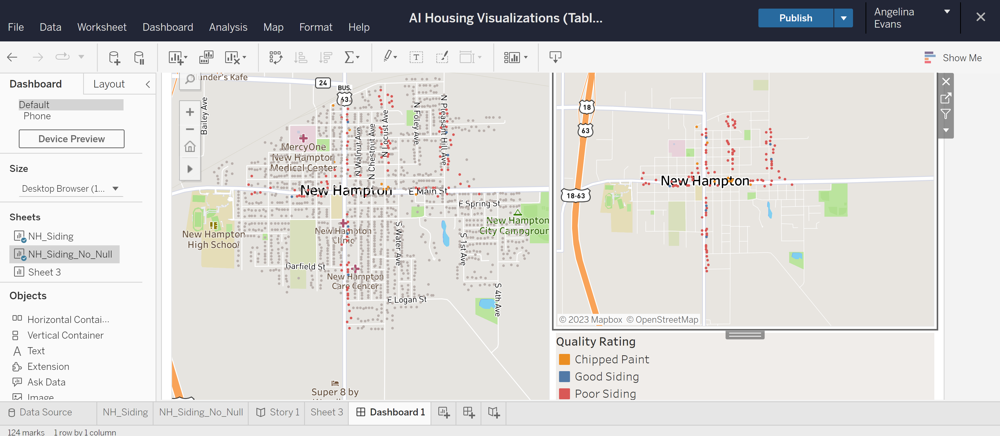

library(tidyverse)Week Seven for the Housing Team
For more detailed information on what each member of the housing team has accomplished thus far, check out their individual blog pages. Links are embedded in their specific sections.
AI-Driven Housing Evaluation for Rural Community Development
Hello! Welcome to week seven of Data Science for the Public Good for the Housing Team. We have made a lot of progress in the past seven weeks, and we are excited to share it with you!
First up, the teaser video!
We made a short YouTube video this week to tease the upcoming final presentation for DSPG on July 14th. The final presentation will be held in the room 0114 of the Student Innovation Center on Iowa State University’s campus from 8:30 AM -12:00 PM. Attendees can join virtually via Zoom or in person. Click here for more information.
Demographic Analysis
The Housing Team recently introduced a new section to their project: a demographics section. Demographic profiles for Grundy Center, Independence, and New Hampton were created last week. This week the focus was shifted to analysis. One of our objectives is to determine which communities in Iowa have the most need for our project, thus we are conducting a demographic analysis.
We are covering the following characteristics of communities within our analysis:
population
housing
income
jobs and the workforce
Most of our data is coming from the 2000-2020 Decennial Census or the 2021 5-Year American Community Survey. Additional data sources can be found here and here.
The Housing Team was able to make some strides with the demographic analysis this week and compile gathered data into a larger CSV file.
# Read the CSV file
data <- read.csv("C:/Users/Kailyn Hogan/OneDrive - Iowa State University/Documents/GitHub/Housing/demographics analysis/analysing_iowa_communities.csv")
# Display the contents of the CSV file
knitr::kable(head(arrange(data, NAME)))| GEOID | NAME | pop20 | pop10 | pop00 | prc_change | change_label | under18E | under18M | over65E | over65M | prc_under18E | prc_under18M | prc_over65E | prc_over65M | age_label | med_ageE | med_ageM | total_unitsE | total_unitsM | occupied_unitsE | occupied_unitsM | vacant_unitsE | vacant_unitsM | owner_occupiedE | owner_occupiedM | renter_occupiedE | renter_occupiedM | median_house_valueE | median_house_valueM | median_year_builtE | median_year_builtM | median_house_ageE | median_house_ageM | home_ownership_rateE | home_ownership_rateM | vacancy_rateE | vacancy_rateM | rental_rateE | rental_rateM | Residential | Ag.Land | Ag.Building | Commercial | Industrial | total_workforceE | total_workforceM | unemployedE | unemployedM | prc_unemployed | unemployed_moe | totalE | totalM | travelE | travelM | prc_travel | travel_moe |
|---|---|---|---|---|---|---|---|---|---|---|---|---|---|---|---|---|---|---|---|---|---|---|---|---|---|---|---|---|---|---|---|---|---|---|---|---|---|---|---|---|---|---|---|---|---|---|---|---|---|---|---|---|---|---|---|---|
| 1900190 | Ackley | 1599 | 1589 | 1809 | -0.1313321 | Shrinking | 402 | 68.39591 | 349 | 9.030714 | 0.2356389 | 0.0440364 | 0.2045721 | 0.0166782 | Young | 41.5 | 3.0 | 800 | 71 | 705 | 69 | 95 | 39 | 553 | 59 | 152 | 48 | 705 | 69 | 1955 | 5 | 68 | 5 | 0.7843972 | 0.1135668 | 0.1187500 | 0.0498762 | 0.2156028 | 0.0712801 | 59077903 | 1756505 | 61418 | 20369025 | 2143449 | 828 | 88 | 25 | 17 | 0.0301932 | 0.0207807 | 797 | 85 | 534 | 83 | 0.6700125 | 0.1262985 |
| 1900235 | Ackworth | 115 | 83 | 85 | 0.2608696 | Growing | 50 | 26.47640 | 24 | 6.256889 | 0.3378378 | 0.2123131 | 0.1621622 | 0.0692779 | Young | 38.1 | 30.8 | 47 | 20 | 47 | 20 | 0 | 10 | 35 | 17 | 12 | 11 | 47 | 20 | 1999 | 11 | 24 | 11 | 0.7446809 | 0.4808792 | 0.0000000 | 0.2127660 | 0.2553191 | 0.2580309 | 10399627 | 403117 | 7779 | 67230 | 0 | 73 | 39 | 6 | 9 | 0.0821918 | 0.1308740 | 67 | 38 | 64 | 39 | 0.9552239 | 0.7951991 |
| 1900370 | Adair | 791 | 781 | 839 | -0.0606827 | Shrinking | 206 | 67.47592 | 144 | 7.692109 | 0.2406542 | 0.0889397 | 0.1682243 | 0.0301623 | Young | 37.7 | 8.6 | 384 | 60 | 344 | 59 | 40 | 27 | 207 | 44 | 137 | 44 | 344 | 59 | 1960 | 8 | 63 | 8 | 0.6017442 | 0.1643524 | 0.1041667 | 0.0721717 | 0.3982558 | 0.1450029 | 1151067 | 715063 | 40676 | 5091781 | 195604 | 440 | 101 | 25 | 25 | 0.0568182 | 0.0582959 | 412 | 93 | 230 | 57 | 0.5582524 | 0.1871361 |
| 1900505 | Adel | 6153 | 3682 | 3435 | 0.4417357 | Growing | 1708 | 285.81987 | 661 | 14.821549 | 0.2911198 | 0.0508966 | 0.1126641 | 0.0062375 | Young | 36.8 | 1.5 | 2312 | 151 | 2234 | 120 | 78 | 97 | 1548 | 171 | 686 | 157 | 2234 | 120 | 1978 | 7 | 45 | 7 | 0.6929275 | 0.0851142 | 0.0337370 | 0.0420128 | 0.3070725 | 0.0721873 | 257984582 | 2651441 | 27555 | 81299747 | 12757527 | 3125 | 245 | 127 | 93 | 0.0406400 | 0.0299301 | 2924 | 229 | 2216 | 263 | 0.7578659 | 0.1077639 |
| 1900595 | Afton | 874 | 845 | 917 | -0.0491991 | Shrinking | 208 | 60.94260 | 189 | 8.606830 | 0.2275711 | 0.0737953 | 0.2067834 | 0.0302371 | Young | 39.0 | 9.2 | 382 | 56 | 357 | 53 | 25 | 16 | 251 | 40 | 106 | 36 | 357 | 53 | 1962 | 3 | 61 | 3 | 0.7030812 | 0.1531307 | 0.0654450 | 0.0429696 | 0.2969188 | 0.1100539 | 24900696 | 138605 | 38906 | 7514181 | 1583244 | 480 | 100 | 42 | 31 | 0.0875000 | 0.0671067 | 434 | 90 | 319 | 77 | 0.7350230 | 0.2339033 |
| 1900640 | Agency | 620 | 638 | 622 | -0.0032258 | Stable | 71 | 29.79933 | 123 | 6.383032 | 0.1501057 | 0.0678777 | 0.2600423 | 0.0458014 | Aging | 49.6 | 10.8 | 233 | 41 | 211 | 38 | 22 | 22 | 154 | 29 | 57 | 25 | 211 | 38 | 1959 | 6 | 64 | 6 | 0.7298578 | 0.1901772 | 0.0944206 | 0.0958713 | 0.2701422 | 0.1280830 | 82024799 | 119286 | 70 | 2742290 | 2872782 | 240 | 63 | 7 | 7 | 0.0291667 | 0.0301548 | 232 | 63 | 219 | 63 | 0.9439655 | 0.3734276 |
Find more information on the Demographic Analysis process by clicking the link here.
AI Models
To start this section off, I would like to recap out AI Model progress. In total we have seven different AI Models all testing images for the conditions of different house characteristics. The models are listed below:
house present
clear image
multiple houses
vegetation
roof
gutter
siding
The last four AI Models – vegetation, roof, gutter, and siding – are aided by the WINVEST project. The entirety of DSPG collected data on the conditions of Grundy Center, Independence, and New Hampton houses’ vegetation, roof, gutter, and siding through WINVEST.
As of this week, with the completion of the roof and gutter models, all AI Models are finished. Next is training.
Image Sorting for Model Training
The Housing Team was able to add WINVEST photos into our image collection this week. We specifically filtered the WINVEST data sets to only download the images associated with poor characteristics. This was done because we need more images of bad houses to accurately train our models. We have enough images of good houses at this point.
Below is a diagram detailing the image storage solution we are managing for our AI Models.

An image sorting algorithm was created to sort each image by address and create an associated folder. Images from all sources (Google, Zillow, WINVEST) can be stored in the same folder and run through the AI Model together.

Storing AI Model Outputs
Last week, code was written to take the outputs of the AI Model and write them to a CSV file. Last weeks version was simply a test, but, as of this week, we are able to write the outputs to the CSV file officially.
# Read the CSV file
new_hampton <- read.csv("C:/Users/Kailyn Hogan/OneDrive - Iowa State University/Documents/GitHub/Housing/housing databases/New_Hampton_database.csv")
# Display the contents of the CSV file
knitr::kable(head(new_hampton))| address | city | state | source | city_id | image_name | image_url | lon | lat | date | parcel_num | floors_num | bedrooms_num | bathrooms_num | basement | heating | cooling | yr_built | own_v_rent | age_tenants | tenants_num | type_property | sqft | curr_price | prev_price | county | clear_image | test_failed | rand_select | vegetation | vegetation_confidence | siding | siding_confidence | gutter | gutter_confidence | roof | roof_confidence | img_used |
|---|---|---|---|---|---|---|---|---|---|---|---|---|---|---|---|---|---|---|---|---|---|---|---|---|---|---|---|---|---|---|---|---|---|---|---|---|---|
| 116 N CHESTNUT ST | New Hampton | Iowa | G | H | G_H_116 N CHESTNUT ST.png | https://maps.googleapis.com/maps/api/streetview?size=800x800&location=116+N+CHESTNUT+ST,New+Hampton+Iowa | -92.31573 | 43.06073 | NA | NA | NA | NA | NA | NA | NA | NA | NA | NA | NA | NA | NA | NA | NA | NA | NA | NA | NA | NA | NA | NA | NA | NA | |||||
| 12 E COURT ST | New Hampton | Iowa | G | H | G_H_12 E COURT ST.png | https://maps.googleapis.com/maps/api/streetview?size=800x800&location=12+E+COURT+ST,New+Hampton+Iowa | -92.31436 | 43.06131 | NA | NA | NA | NA | NA | NA | NA | NA | NA | NA | NA | NA | NA | NA | NA | NA | NA | NA | NA | NA | NA | NA | NA | NA | |||||
| 311 W MAIN ST | New Hampton | Iowa | G | H | G_H_311 W MAIN ST.png | https://maps.googleapis.com/maps/api/streetview?size=800x800&location=311+W+MAIN+ST,New+Hampton+Iowa | -92.31997 | 43.05944 | NA | NA | NA | NA | NA | NA | NA | NA | NA | NA | NA | NA | NA | NA | NA | NA | NA | FALSE | house_present | FALSE | 0.00 | 0.00 | 0.00 | NA | 0 | ||||
| 102 E MAIN ST | New Hampton | Iowa | G | H | G_H_102 E MAIN ST.png | https://maps.googleapis.com/maps/api/streetview?size=800x800&location=102+E+MAIN+ST,New+Hampton+Iowa | -92.31394 | 43.05950 | NA | NA | NA | NA | NA | NA | NA | NA | NA | NA | NA | NA | NA | NA | NA | NA | NA | TRUE | FALSE | garden_present | 38.42 | chipped_paint | 35.95 | poor/no_gutter | 52.65 | FALSE | 0 | G_H_102 E MAIN ST_ | |
| 508 N LINN AVE | New Hampton | Iowa | G | H | G_H_508 N LINN AVE.png | https://maps.googleapis.com/maps/api/streetview?size=800x800&location=508+N+LINN+AVE,New+Hampton+Iowa | -92.31810 | 43.06419 | NA | NA | NA | NA | NA | NA | NA | NA | NA | NA | NA | NA | NA | NA | NA | NA | NA | FALSE | house_present | FALSE | 0.00 | 0.00 | 0.00 | NA | 0 | ||||
| 9 W GARDNER ST | New Hampton | Iowa | G | H | G_H_9 W GARDNER ST.png | https://maps.googleapis.com/maps/api/streetview?size=800x800&location=9+W+GARDNER+ST,New+Hampton+Iowa | -92.31587 | 43.06500 | NA | NA | NA | NA | NA | NA | NA | NA | NA | NA | NA | NA | NA | NA | NA | NA | NA | NA | NA | NA | NA | NA | NA | NA |
Find more information on the AI Model creation process by clicking the link here.
Geospatial Mapping
We are using the CSV file with the outputs of the AI Models to map the conditions of housing each city. To do this, we are using Tableau.
The better part of this week has been spent learning how to use Tableau.

Find more information on the Geospatial Mapping process by clicking the link here.
Next Steps
Listed below is what the Housing Team plans to accomplish over the next two weeks before our final presentation:
Further train AI Models to provide a more accurate evaluation of housing conditions
Build Heatmap to determine where AI Models are basing evaluation
Update demographic profile graphs to include state, regional, and national comparisons
Analyze demographic profiles to determine patterns and trends between Grundy Center, Independence, and New Hampton
Visualize the demographic analysis data using Tableau
Determine communities that could benefit from our project
Further analyze in-need communities
Visualize the outputs of the AI Models geospatially using Tableau
Analyse Tableau visualizations and show findings
Compare housing conditions in Grundy Center, Independence, and New Hampton using Tableau visualizations
To wrap up this week, we generated an outline for our final presentation. Section titles, speakers, main points, and time allotted are listed in the table below. Note, this a draft of the final presentation. It is subject to change.
Final Presentation Outline
| SPEAKER | SECTION | TIME |
| Morenike | Introduction
|
2 min |
| Angelina and Kailyn | Data Collection Scraping from Beacon and Vanguard
Address Cleaning and Google Links
Scraping from Zillow
|
5 min |
Gavin Angelina and Kailyn on Manual Image Sorting |
AI Model Creation Only displaying images for one of the models. Note in presentation the ones that do exist, but we are using only one model to refine presentation. Manual Image Sorting to Train Models
Building AI Models (Binary and Multiple)
|
10 min |
| Gavin | The Thing Gavin Made that Writes to a CSV | 8 min |
| Kailyn | Demographic Analysis and Profiling Select Communities
All Iowa Communities
|
6 min |
| Angelina | Visualizing Housing Quality Data from AI Model Outputs (with GIS?) Geocoding Addresses
Mapping AI Model data
|
6 min |
| Morenike | Conclusion
|
2 min |
| Questions | 10 min |